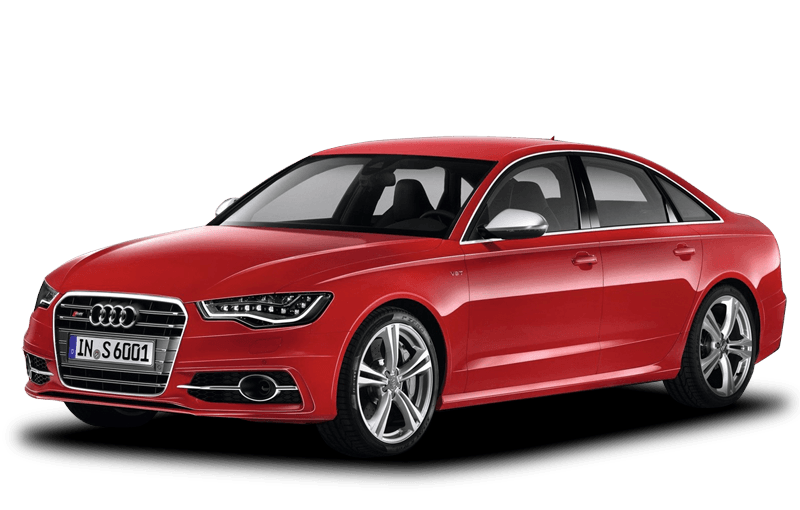
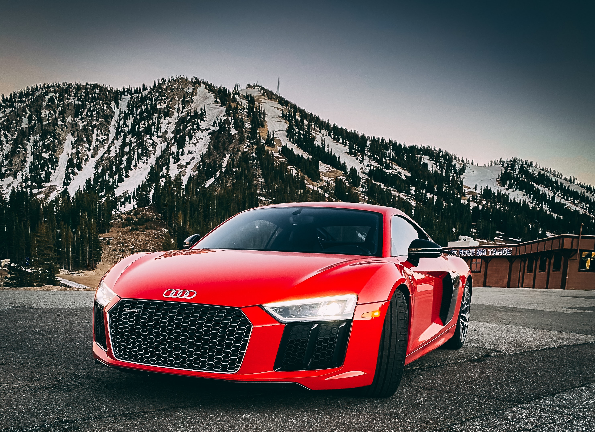

Lietuvos Audi klubo forumas
Naujienos Lietuvoje čia
Naujienos užsienyje čia
Naujas „Audi e-tron GT“: pradedama serijinė gamyba nulinės taršos gamykloje Böllinger Höfo padalinyje aistra derinama su tikslumu, inovacijomis ir tvarumu: serijinei gamybai ruošiamas vien tik elektra varomas „Audi e-tron GT“, kuriame didelė galia dera su rūpinimusi aplinka. Vien tik iš atsinaujinančių šaltinių išgaunama elektra ir šiluma, o gamyba nedidina anglies dvideginio taršos. Resursus tausojančioje automobilio gamyboje nenaudojamas popierius ir pakuotės, aliuminis ir polimerai gaminami uždaro ciklo procese ir tai bus pirmas naujas „Audi“, sukurtas be jokio fizinio prototipo. Naujojo „Audi e-tron GT“ pasaulinė premjera įvyks 2021 metų pradžioje, tačiau automobilio gamybos darbai pradedami jau dabar.
Prieš daugiau kaip dvidešimt metų „Audi“ su pirmuoju „S3“ modeliu pristatė naują kompaktinių „Premium“ automobilių segmentą. O šiandien debiutuoja naujos kartos „S3 Sportback“ ir „S3 Limousine“ modeliai, kuriuose sumontuotas „2.0 TFSI“ variklis pasiekia 228 kW (310 AG) galią, 400 Nm sukimo momentą ir iki 100 km/val. leidžia įsibėgėti vos per 4,8 sekundes. Septynių greičių „S tronic“ transmisija, pažangiai valdoma „quattro“ pavara ir „S“ modeliams būdingi sportiniai pakabos nustatymai su pasirenkama amortizatorių kontrole užtikrina puikias važiavimo savybes. Itin pažangių „S3“ modelių įranga apima ir tokias naujas technologijas kaip nauja prietaisų valdymo koncepcija, naujos multimedijos ir pagalbos vairuotojui sistemos.
Šiemet legendinei „Audi“ visų ratų „quattro“ pavarai suėjo 40 metų, kada ji pirmą kartą debiutavo 1980 metų Ženevos automobilių parodoje. Per šiuos keturiasdešimt metų daugiau kaip 8 milijonai pirkėjų iš viso pasaulio pasirinko saugumą, stabilumą ir dinamiką užtikrinančią „quattro“ pavarą, o Lietuvoje atlikta apklausa atskleidė, kad daugiau kaip 70 proc. Vilniaus ir Kauno gyventojų norėtų vairuoti visų ratų pavara varomą automobilį.